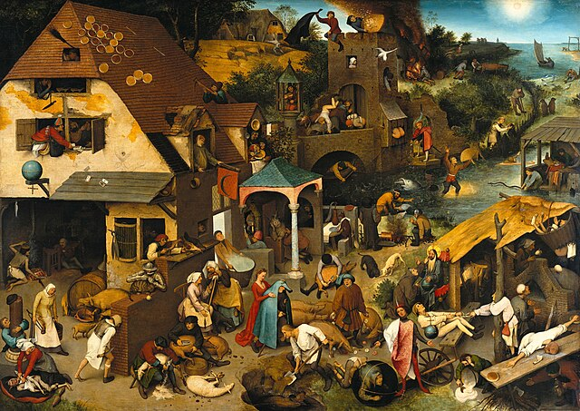

今日の戯れ言 2024-11-17

久しぶりに Mastodon に書き散らかした戯れ言からピックアップし再構成してお送りする。
Proverbs が面白い
以下の記事を見まして
今 Steam 版のロマサガ2をスキマ時間でちまちまとやってるのだが，ちょっと浮気してやってみようかと思い立つ。
ひとり用のパズルゲーム。 「マインスイーパ×ピクロスなゲーム」とある通り，マス目の数字を見ながら2色の色を埋めていく。
マインスイーパとは違い間違っても「ドカン！」でゲームオーバーということもなくいくらでも巻き戻せる。 ヒント機能が上手くて，行き詰まって困るということもない。 何より，ちまちまとマス目を埋めていく作業に耽溺してしまうため止めどきが分からない（笑）
完成図は16世紀にピーテル・ブリューゲル（お父さんの方）が描いた「ネーデルラントの諺（Nederlandse Spreekwoorden / Netherlandish Proverbs）」がモチーフになってるらしい。

この中に100の諺（proverb）が隠れてるんだって。 だからゲームタイトルが “Proverbs” なのか（ゲーム内の実績総数が96個なので，96個の諺が収録されていると思われ）。 どうやらゲームの盤面が諺ごとに仕切られていて各エリアを2色で塗りつぶすとその部分の絵が表示され諺が実績解除されるらしい（ゴメン。諺のないエリアもあった）。
こりゃあしばらくロマサガ2はお休みだな（笑）
ブックマーク
- 2024: Mosaic Retrospective on Steam : ゲームは無料で遊べるがユニセフへの寄付の呼びかけがある
松江市のゴミ分別
昨日の記事で大量の USB ケーブルがゴミになったのだが，ケーブルってどのゴミで出すんだっけ？
何故 PDF を分割する orz
故郷の松江市に
たとえばメーカー製のパソコンに付属するキーボードやマウスはパソコン本体と一緒にリサイクルしなければならないけど，個別に買ったキーボードやマウスは「燃えるゴミ」に出せる。 キーボードやマウスは金属部品を含むが「金属ゴミ」か「燃えるゴミ」かの判断は見た目の金属部分が多いか否かでするらしい。 キーボードやマウスはパット見で金属部分は少ないため「燃えるゴミ」で出していいそうな。 分解して金属部品を取り出す必要はないし，もっと言うならスプレー缶で穴を空けるといった処理もする必要はないんだって。
他の自治体も今はそうなんかね。 世の中変わったなぁ。 「ダイオキシン騒動」で異様に神経質になってた頃が懐かしいよ（笑）
というわけで USB ケーブルは「燃えるゴミ」にポイ！
祝日・休日と祭日は違う
少し前の話題だが Google がまたヘンテコなことをしているらしい。
日本では祝日・休日は「国民の祝日に関する法律」で厳密に決まっている。 一方で祭日に関しては国は関与しない。 まぁ，当然だよね。
件の「七五三」は強いて言うなら祭日だろう。 別に祭日に休んだっていいんだよ。 周囲の合意を得られるなら。 お盆は大抵みんな休むじゃない。
日本の祝日・休日を知りたいなら国立天文台の情報を利用することを強くお薦めする。
これに関連して拙作の goark/koyomi Go パッケージで国立天文台の暦象データを取得できる（効率はあまりよくないが）。 よろしければどうぞ。
なお，祭日について知りたいなら高島暦あたりを参照するのがいいだろう。
参考

- 天文年鑑 2025年版
- 天文年鑑編集委員会 (編集)
- 誠文堂新光社 2024-12-05 (Release 2024-12-05)
- 単行本
- 4416723660 (ASIN), 9784416723661 (EAN), 4416723660 (ISBN)
- 評価
天文ファン必携。2025年版。これが届くと年末って感じ。

- 令和7年神宮館高島暦
- 神宮館編集部 (著)
- 神宮館 2024-08-04 (Release 2024-08-15)
- Kindle版
- B0DB51XXGF (ASIN)
Kindle 版がある。昔は親が毎年買っていたのだが近年は実家で見かけないな。

{kind=link}